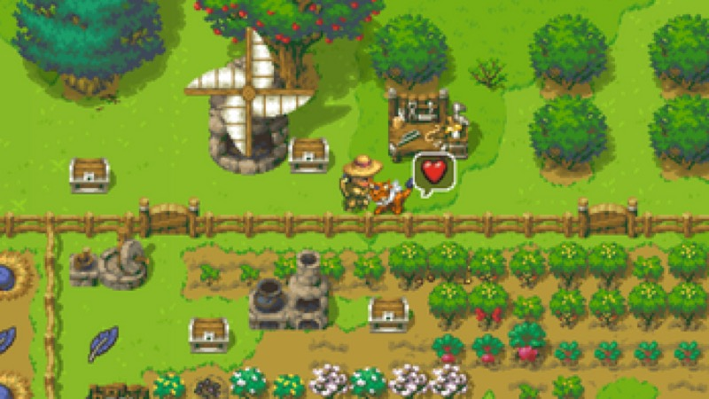

Reincarnate into a world brimming with danger and possibility. Farm, build, craft, tame creatures, and forge your own path across untamed wilds — all free in your browser.

▶ Click Play Now above to start the game in your browser — no download required.
Witherspring Wilds is an expansive open-world life simulation where you reincarnate into a world brimming with danger and possibility. Forge your own path — cultivate a thriving farm, construct and customize your dream homestead, delve deep into mountain caves for rare ores, brew powerful potions, craft weapons and magical wands, or befriend the colorful cast of NPCs who populate the wilds. Every creature you encounter can be tamed as a loyal companion, joining you on adventures across diverse biomes with escalating challenge levels. Whether you prefer the tranquil pace of a cozy farming simulator or the adrenaline rush of hunting powerful bosses with sword, bow, and magic, Witherspring Wilds adapts to your playstyle. Currently in active development (v0.2.5) by Fancy Fish Games, the world grows richer with every update.
Everything you need for your perfect open-world life sim adventure
Get started in four simple steps
| Action | Mouse | Keyboard |
|---|---|---|
| Move Character | — | WASD / Arrow Keys |
| Interact / Confirm | Left Click | E / Space |
| Attack | Left Click | Z / X |
| Open Inventory | — | I / Tab |
| Open Map | — | M |
| Pause / Menu | — | Esc |
| Gamepad | — | Full gamepad support (plug in and play) |
Top-rated for freedom, depth, and charm
Everything you need to know about Witherspring Wilds at a glance
Everything players ask about Witherspring Wilds
Player Comments
Leave a Comment